All diagrams
Click a diagram to open its interactive, zoomable HTML version.
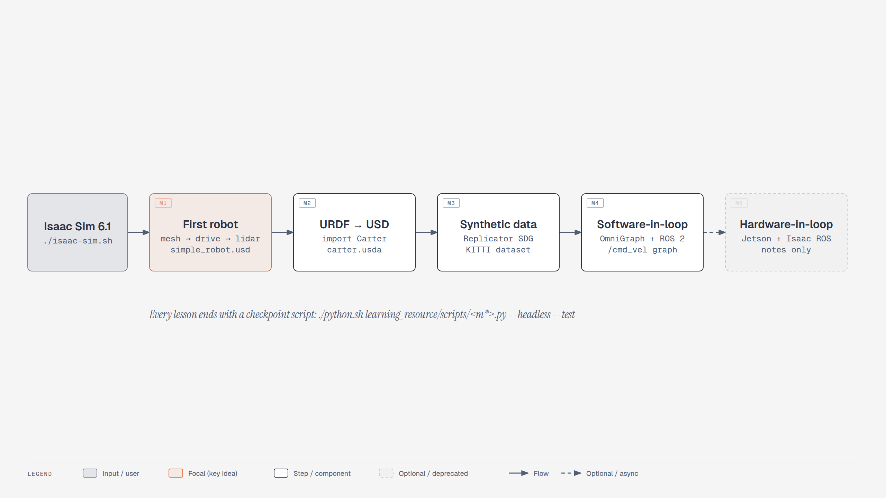
Course map: five modules, one robot story
Course map showing Isaac Sim 6.1 feeding five modules: first robot, URDF import, synthetic data, software-in-the-loop and hardware-in-the-loop, each with its main artifact.
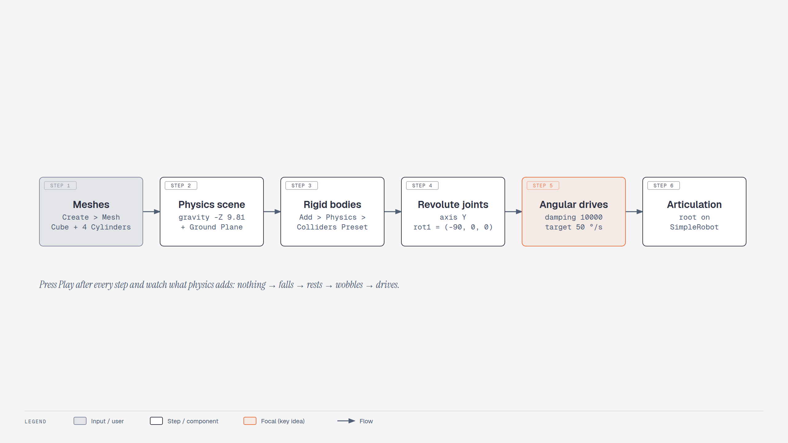
Lesson 1.1 — from a mesh to a driving robot
Six steps that turn plain meshes into a driving robot: meshes, physics scene, rigid bodies, revolute joints, angular drives and an articulation root.
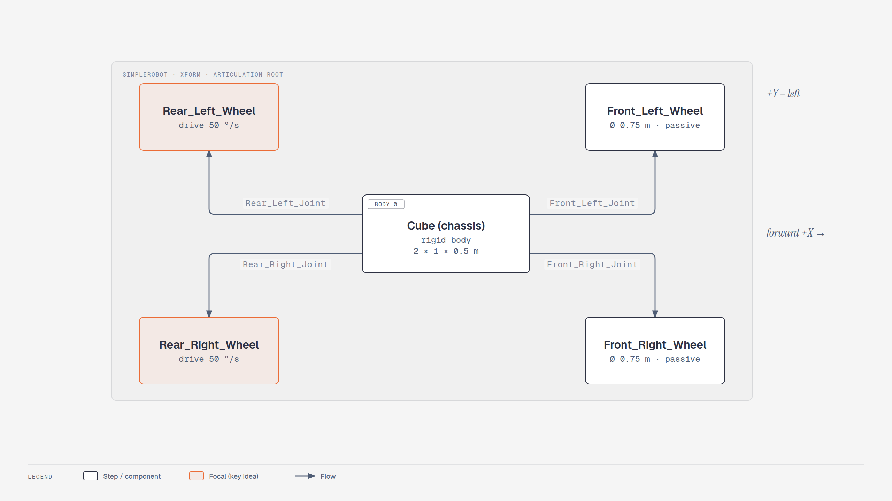
Lesson 1.1 — SimpleRobot, seen from above
Top view of SimpleRobot: the Cube chassis is body 0 of four revolute joints whose body 1 is a wheel; the two rear wheels carry the angular drives.
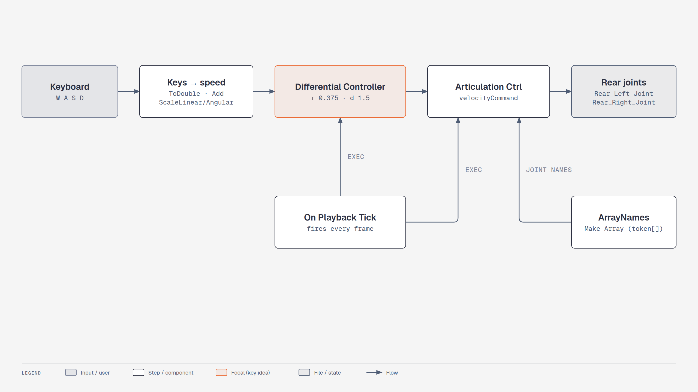
Lesson 1.2 — the Differential Controller graph
Action Graph built by Tools > Robotics > OmniGraph Controllers > Differential Controller: keyboard keys become linear and angular velocity, the controller turns them into wheel speeds and the articulation controller drives the rear joints every frame.

Lesson 1.3 — where to mount each sensor in 6.1
Decision flow for mounting sensors on SimpleRobot in Isaac Sim 6.1: cameras and the deprecated PhysX lidar may sit on the fixed-jointed Front_Sensor body, but an RTX lidar must sit directly under the chassis body and above the wheel tops.
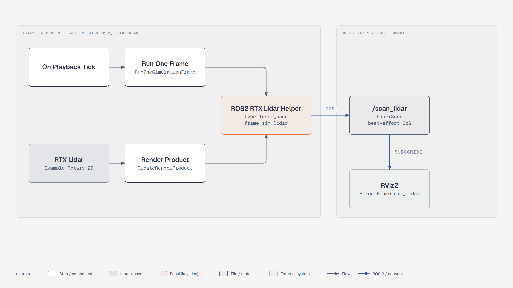
Lesson 1.4 — RTX lidar to RViz over ROS 2
Data path built by Tools > Robotics > ROS 2 OmniGraphs > RTX Lidar: the playback tick renders the RTX lidar into a render product, the ROS2 RTX Lidar Helper publishes a LaserScan on /scan_lidar, and RViz2 draws it.
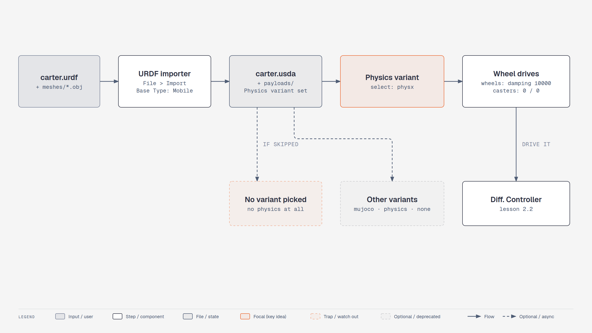
Lesson 2.1 — URDF to a drivable USD robot
Pipeline for importing Carter in Isaac Sim 6.1: the URDF goes through File > Import with Base Type Mobile, becomes carter.usda with payloads and a Physics variant set, the physx variant must be selected and the wheel drives configured before a controller can move it.
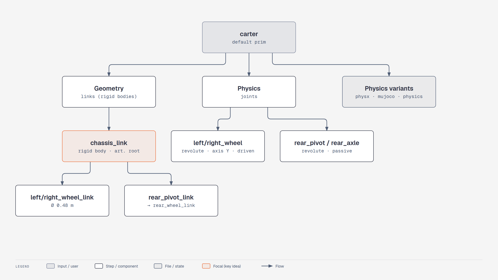
Lesson 2.1 — what the 6.1 importer writes
Hierarchy of the imported carter.usda: links live under Geometry with chassis_link as articulation root, joints live under Physics, and a Physics variant set chooses the engine layer.
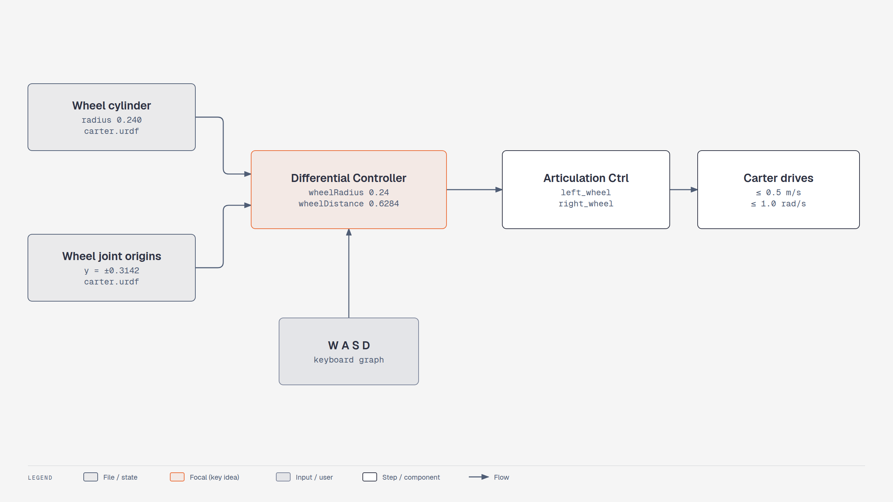
Lesson 2.2 — where the controller numbers come from
The Differential Controller parameters for Carter come straight from the URDF: wheel radius 0.24 m from the wheel cylinder and wheel distance 0.6284 m from the joint offsets; keyboard input then drives left_wheel and right_wheel through the articulation controller, clamped to 0.5 m/s.
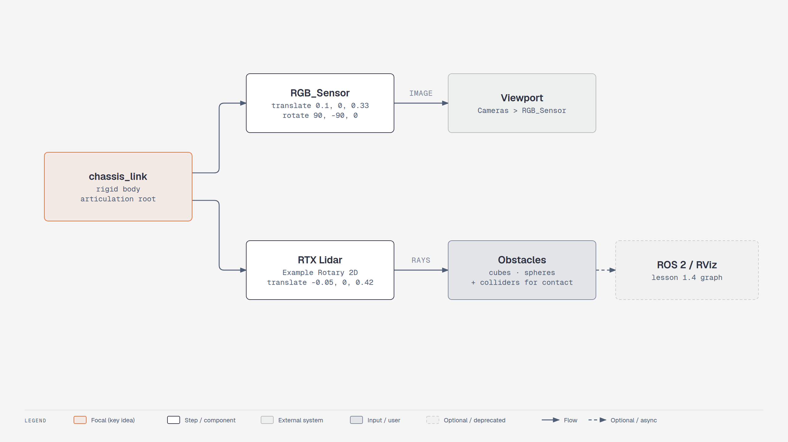
Lesson 2.3 — sensors on the imported Carter
Camera and RTX lidar mounted directly under Carter's chassis_link body; the camera feeds a viewport, the lidar sees every rendered obstacle, and colliders on the obstacles only matter for physical contact.
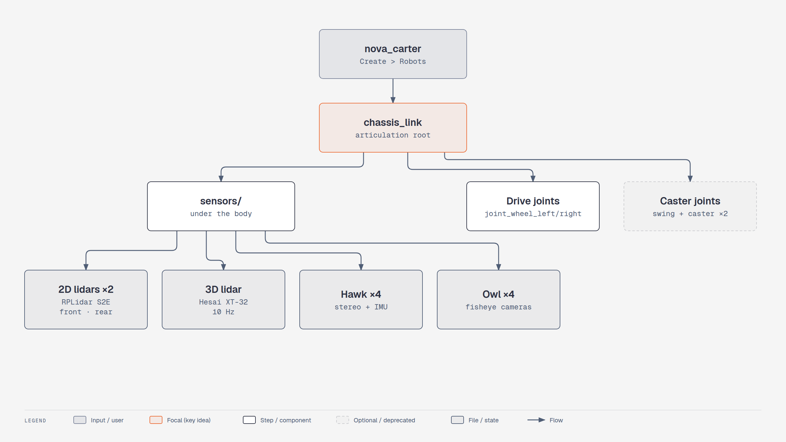
Lesson 2.4 — Nova Carter's ready-made sensor suite
Hierarchy of NVIDIA's Nova Carter in Isaac Sim 6.1: chassis_link is the articulation root carrying two 2D lidars, an XT-32 3D lidar, four Hawk stereo cameras, four Owl fisheye cameras, and the driven and caster joints.
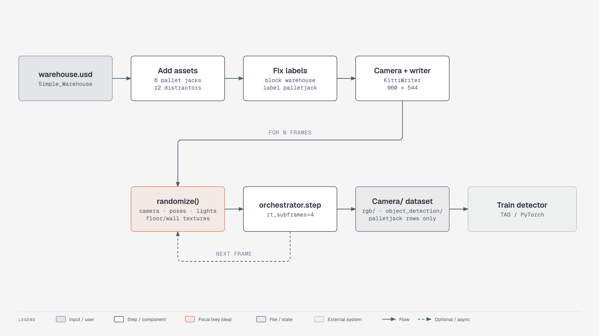
Module 3 — pallet-jack dataset with Replicator (6.1)
Synthetic data pipeline: load the warehouse, add pallet jacks and distractors, keep labels only on pallet jacks, set up camera and KittiWriter, then per frame randomize with the functional API, step the orchestrator and write a KITTI dataset used to train a detector.
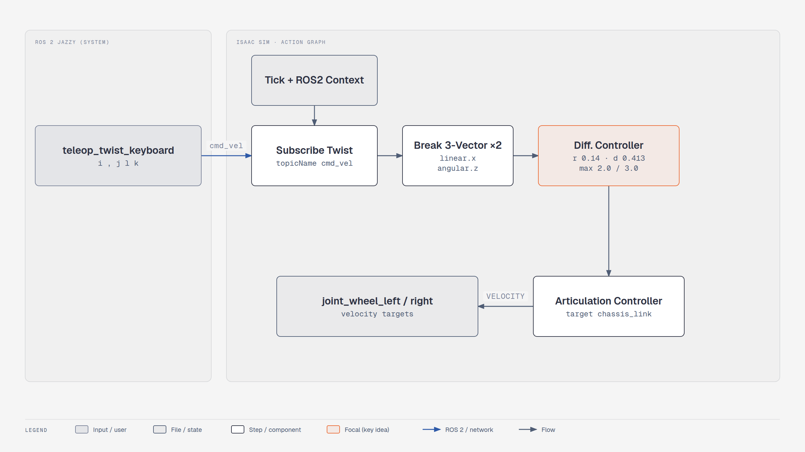
Lesson 4.1 — driving Nova Carter from /cmd_vel
ROS 2 to Isaac Sim control loop: teleop_twist_keyboard publishes geometry_msgs/Twist on /cmd_vel, the Action Graph subscribes, splits linear.x and angular.z, the Differential Controller computes wheel speeds and the Articulation Controller drives joint_wheel_left and joint_wheel_right.
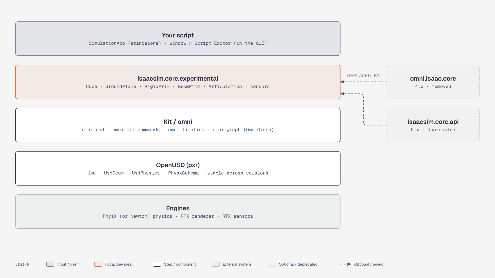
Lesson 4.2 — the Python layers you script against
Layer stack of Isaac Sim 6.1 scripting: your script on top of isaacsim.core.experimental, Kit and omni services, OpenUSD pxr APIs and the PhysX and RTX engines; omni.isaac.core is removed and isaacsim.core.api deprecated.

Lesson 4.3 — software-in-the-loop with Isaac ROS
Software-in-the-loop setup: Isaac Sim publishes a Hawk camera image on /rgb through the ROS 2 Camera graph, an Isaac ROS segmentation container processes it, and your ROS node can send /cmd_vel back to the drive graph.
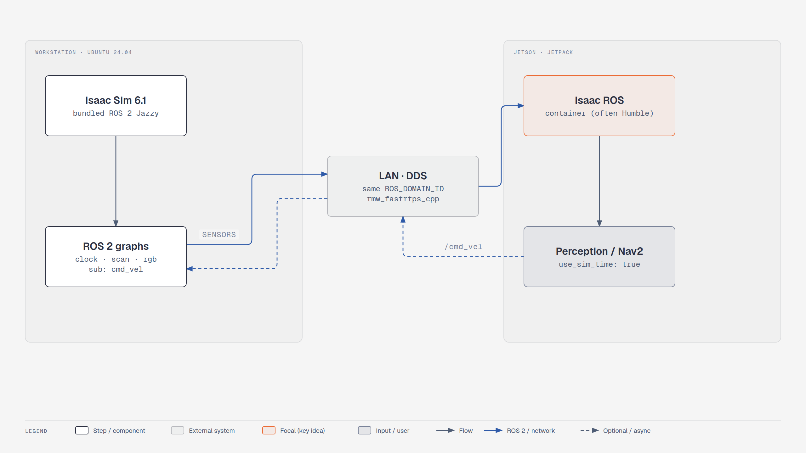
Module 5 — hardware-in-the-loop with a Jetson
Hardware-in-the-loop deployment: the workstation runs Isaac Sim 6.1 with ROS 2 graphs, a LAN carries DDS traffic with matching ROS_DOMAIN_ID and RMW, and the Jetson runs Isaac ROS and your perception or Nav2 nodes using simulated time, sending /cmd_vel back.